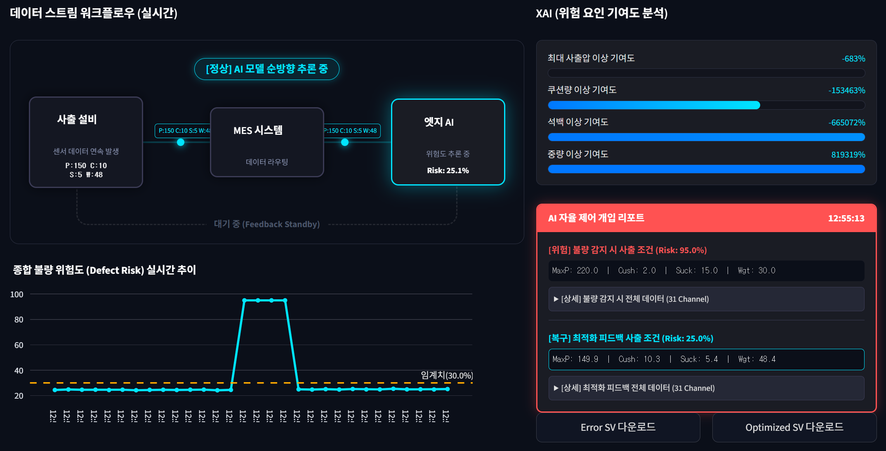
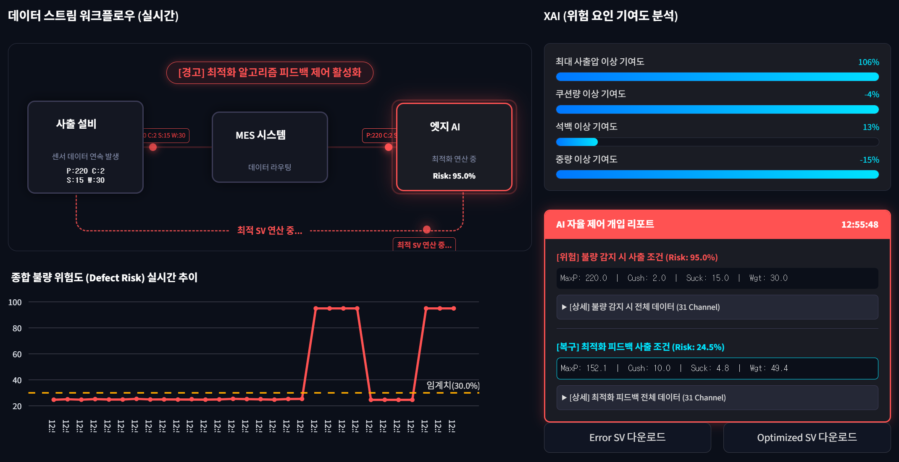
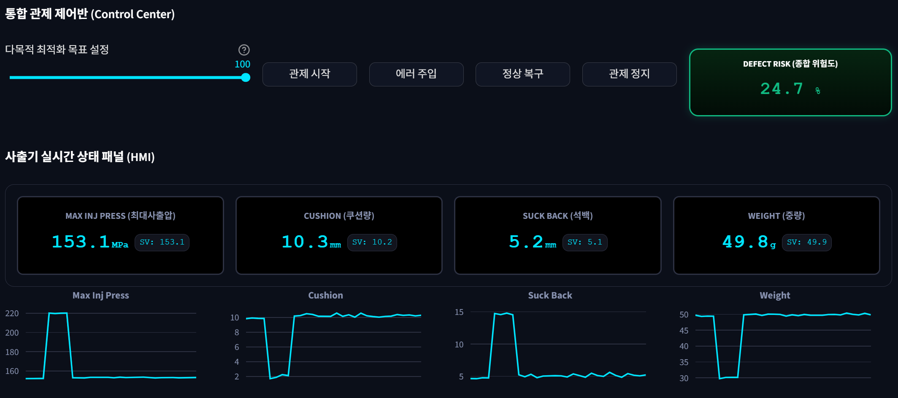
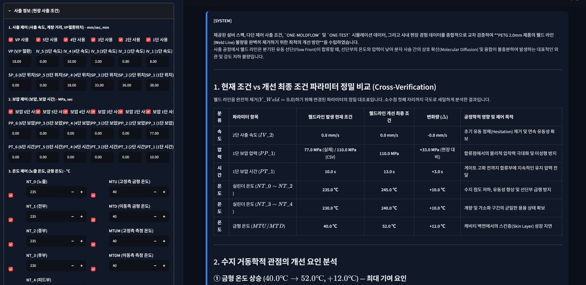
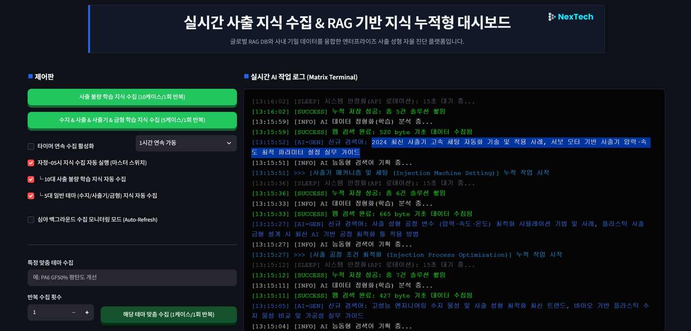

문제 진단부터 최적 조건 도출까지, 하나의 플랫폼에서 해결합니다.
현장 경험에만 의존해온 불량 대응 방식은 재현성과 확장성에 한계가 있습니다.
불량 발생 후 원인 파악에 수 시간, 조건 재설정에 다시 여러 차례의 시험 생산이 소요됩니다. 생산 중단과 폐기 비용이 반복적으로 발생합니다.
경험 많은 엔지니어가 없으면 최적 조건 도출이 어렵습니다. 노하우가 개인에게 귀속되어 조직 차원의 정량적 이전이 어렵습니다.
표준 트러블슈팅 표와 문헌 데이터는 제품·금형·소재별 특성을 반영하지 못해, 실제 생산 조건과 괴리가 발생합니다.
실제 공정 데이터와 CAE 해석 데이터를 학습한 AI가 수 초 안에 최적 조건을 도출합니다. 현장 전문가의 노하우도 정량적으로 함께 반영됩니다.
데이터를 업로드하는 순간부터, AI가 최적 조건을 찾아 현장에 바로 적용 가능한 결과를 제공합니다.
현재 최적 조건 데이터, 누적 이력 데이터, CAE 해석 데이터를 업로드하면 AI가 자동으로 병합하고 전처리합니다. 10대 불량별로 6종 알고리즘 중 가장 정확한 모델을 자동 선택해 학습합니다.
현재 공정 파라미터를 입력하면 10대 불량 각각의 위험 확률을 즉시 계산합니다. 전문가 제약 조건과 불량 가중치를 함께 반영해 현장 경험을 수치화합니다.
역추론 최적화 알고리즘(L-BFGS-B, SLSQP, Powell, Nelder-Mead)이 위험도를 최소화하는 공정 조건을 자동 탐색합니다. 결과는 CSV로 즉시 다운로드해 현장에 바로 적용할 수 있습니다.
업계 표준 10대 불량 유형을 하나의 시스템으로 동시에 진단하고 최적화합니다.
이론과 현장 경험을 결합한 기능 설계로, 도입 즉시 효과를 체감할 수 있습니다.
데이터 크기와 특성을 분석해 RandomForest, XGBoost, GradientBoosting, Logistic Regression 등 6종 알고리즘 중 최적 모델을 자동 선택합니다. CV R² 기반 교차검증으로 신뢰성을 보장합니다.
4가지 수치 최적화 알고리즘이 동시에 실행되어 위험도를 최소화하는 공정 조건을 5초 이내에 도출합니다. 전문가 제약 조건을 반영한 현실적인 값을 제공합니다.
특정 공정 변수를 고정하거나 목표값을 지정하는 전문가 제약 조건 기능으로, 숙련 엔지니어의 경험을 AI 진단에 정량적으로 반영합니다.
공정 변수를 하나씩 변화시킬 때 불량 위험도가 어떻게 달라지는지 시각화합니다. 어떤 변수가 가장 중요한지 즉시 파악할 수 있습니다.
34개 공정 변수와 10대 불량 간의 상관계수를 컬러 매트릭스로 표시합니다. 개선 우선순위를 한눈에 파악하고 데이터 기반 의사결정을 지원합니다.
Groq LLM 기반 AI가 분석 결과를 해석해 현장 작업자가 즉시 실행할 수 있는 조치 사항을 자동으로 작성합니다.
단일 알고리즘에 의존하지 않습니다. 데이터 크기와 불량 특성에 따라 교차검증을 통해 가장 정확한 모델을 선택합니다.
비선형 중간 규모 데이터에 최적입니다. 과적합에 강하고 안정적인 예측을 제공합니다.
복잡한 패턴과 대규모 데이터에서 강력한 성능을 발휘합니다. 오차를 순차적으로 줄여 높은 정확도를 달성합니다.
소규모 선형 데이터에 적합합니다. 빠르고 해석이 쉬워 기준 모델로 활용됩니다.
메모리 효율적인 준뉴턴 방법으로, 변수가 많은 문제에서도 빠르게 수렴합니다.
제약 조건이 있는 비선형 최적화에 특화되어, 실제 공정 범위를 벗어나지 않는 해를 찾습니다.
미분 없이 동작해 불연속적이거나 노이즈가 있는 손실 함수에도 안정적으로 대응합니다.
심플렉스 기반 탐색으로 그래디언트 정보 없이도 최적해에 접근하는 대안적 알고리즘입니다.
위험을 진단하는 것을 넘어, 사람이 개입하기 전에 AI가 스스로 공정 조건을 재설정합니다.
사출기 HMI와 연동된 최대사출압·쿠션량·석백·중량 데이터를 실시간으로 수집하며 종합 불량 위험도를 상시 추론합니다.
공정 조건이 흔들리면 위험도가 임계치를 넘어 급등합니다. 실제 데모에서는 정상 상태 대비 95.0%까지 치솟는 상황을 재현했습니다.
사람의 개입 없이 AI가 최적 공정 조건(SV)을 역산출해 즉시 피드백합니다. XAI 분석으로 어떤 변수가 위험을 유발했는지도 함께 설명합니다.
재계산된 조건이 적용되며 위험도가 다시 임계치 이내로 돌아옵니다. Error SV·Optimized SV 데이터를 그대로 다운로드해 현장 PLC 반영도 가능합니다.

위험도 25.1%로 임계치(30%) 이내에서 안정적으로 유지되는 정상 운영 상태입니다. 데이터 스트림 워크플로우와 XAI 기여도 분석이 실시간으로 함께 표시됩니다.

위험도가 95.0%까지 급등하면, 사람의 개입 없이 AI가 즉시 최적화 알고리즘을 가동해 24.5%로 복구할 공정 조건을 스스로 계산합니다.

최대사출압·쿠션량·석백·중량 4개 채널 모두, 이상 발생과 정상 복귀 과정이 트렌드 차트에 그대로 기록됩니다.
범용 LLM은 원론만 답합니다. 수학적 물리 연산, 글로벌 최신 자료, 그리고 우리 공장만의 노하우를 융합해 숫자로 된 처방전을 제시합니다.
매일 자정부터 새벽 5시까지 AI가 스스로 검색어를 기획해 전 세계 사출 논문·포럼·기술 자료를 수집하고 지식 DB에 누적합니다. 출근하면 시스템은 어제보다 더 똑똑해져 있습니다.
형개력·스크류 직경 등 기계 스펙과 현재 세팅값을 수학적으로 계산해 "보압을 15MPa 낮추십시오"처럼 구체적인 수치로 처방합니다. 두루뭉술한 원론이 아닙니다.
과거 불량 해결 사례와 작업자 피드백을 AI가 학습해 우리 금형에 맞는 조건을 찾습니다. 퇴사자의 노하우도 시스템에 남고, Q&A 챗봇으로 사내 기록을 바로 물어볼 수 있습니다.
기계 스펙과 제품 스펙을 바탕으로 이상적인 배럴 온도, 계량 거리, 보압 등을 수학적으로 계산해 기준점을 잡습니다.
작업자가 실제로 입력한 사출 속도·압력·온도를 인지하고, 앞서 계산한 기준점과 비교합니다.
심야에 수집한 논문·포럼·기술 자료를 로컬 DB로 구축해, 진단의 근거 자료로 검색해 활용합니다.
사내 불량 해결 사례와 작업자 노하우를 최우선으로 반영해 최종 처방전을 완성합니다.

설비 스펙, 다단 제어 사출 조건, 시뮬레이션 데이터, 사내 현장 경험을 교차 검증해 현재 조건과 개선 조건을 파라미터 단위로 비교합니다. 예시 화면(PETG 2.0mm 웰드라인)에서는 금형 온도 +12℃ 등 변경 항목과 수지 거동학적 개선 요인까지 근거와 함께 설명합니다.

AI가 검색어를 기획하고, 웹 검색과 데이터 정형화, 누적 저장까지 수행하는 전 과정을 실시간 작업 로그로 보여줍니다. 10대 불량 학습 지식과 수지·사출·사출기·금형 5대 테마를 자동 수집하며, 원하는 주제만 골라 맞춤 수집할 수도 있습니다.